STAXの建物
・雑司ヶ谷宣教師館
STAXの前身である「昭和光音�梶vが発足したのは1938年、東京の九段で、だった。当時の業務はSPレコード録音と映画のフィルム・トラックの光学録音だったが、戦争の進行と共に、創業者・林氏によれば「軍に関係ない仕事はどっかにいっちまえ」といわれて九段から移転を迫られたらしい。その移転先がいわゆる「雑司ヶ谷宣教師館」である。「雑司ヶ谷宣教師館」はアメリカ人宣教師・ジョン・ムーディー・マッケーレブ（1892年来日）が1907年に建てた宣教活動の拠点であり、1941年に帰国するまで生活していた木造二階建ての洋館である。天井が高く、また広大な庭（約300坪）を有し、録音スタジオとして打ってつけだったようだ。その後「昭和光音�梶vは1952年に音響機器の製作を開始し、STAXとなった。1982年まで本社として使用した。
（全景）
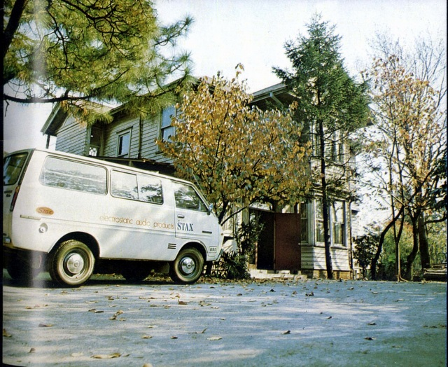
（視聴室）
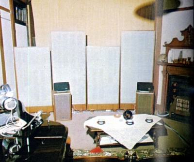
（スピーカーはESS-4Aと、通常スピーカーとEST-205のセットも見える。） 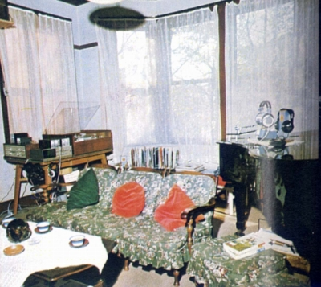
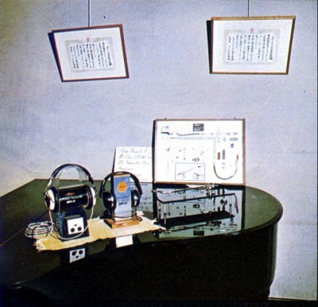
（ピアノの上には代表的商品としてヘッドフォンとアームが展示）その後「雑司ヶ谷宣教師館」は、1982年に豊島区の所有となり、1989年より公開されています。現在では東京都指定有形文化財となり、見学可能ですが、詳細は豊島区ホームページのこちらをご覧ください。
・埼玉県入間郡三芳町社屋
1982年に雑司ヶ谷から本社が移転したのが、埼玉県入間郡三芳町の社屋である。本社の他、工場・研究所・営業本部が一体となったものであり、都内には雑司ヶ谷にほど近い東池袋のマンションに視聴室を兼ねたオフィス（＊）を設けた。この体制は、旧会社の終焉まで続いた。
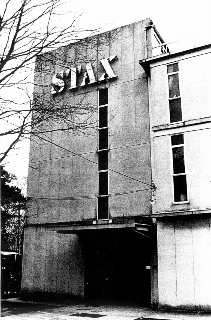
（＊東京オフィスについて）
何度か訪れたが、「東京オフィス」という名称であったが、基本的にオフィス機能はなかったように感じた。1980年代の、まだ旧スタックス社に余裕があった時期には、ワンルームマンション・タイプの部屋を2部屋確保し、1室をイヤ・スピーカーの視聴、もう1室にはラウド・スピーカーがセットされていたと記憶している。後にイヤ・スピーカーの視聴用の1部屋になったはずである。
1988年にオーディオ誌が三芳町社屋を訪問した記事があった。二階がイヤスピーカー工場、三階がパワーアンプやドライバー・ユニット工場だったようだ。
（二階）
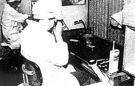
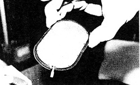
（ほこりを嫌う為クリーン・ベンチでの作業。）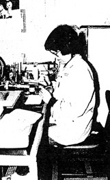
(エッチングで開けた固定極のチェック風景。イヤスピーカーはベテランの女性スタッフが担当していたそうだ。）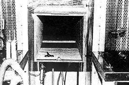
(防塵用のエア・ダクト。2基設置されていた。）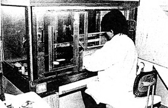
（振動膜の接着作業。有害なガスが出る為、密閉空間を作り、手だけ入れて作業する。）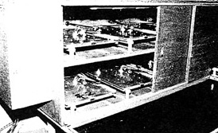
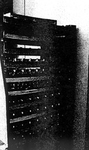
（左が振動板張り付けのジグ。張り付け後は鉛の重しで圧着。）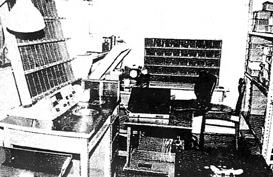
（完成したユニットの検査スペース）（三階）
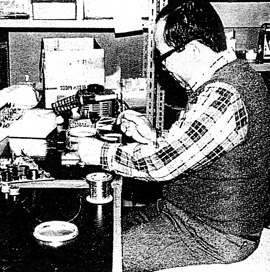
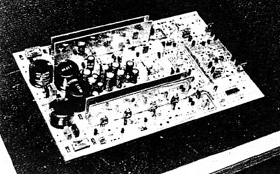
（DMA-X1のドライバー段組立と完成した基盤）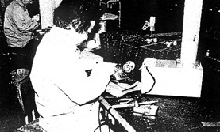
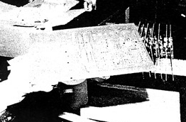
（SRM-T1の部品取付と基盤）またこの記事で興味深いのは、当時のスタックスは、自らエージング作業を行っていたことだった。ドライバーユニットは、透明フィルムで仕切り温度を上げた状態で8時間、イヤ・スピーカーは30時間のエージングを経た上で、再度検査され出荷されたそうだ。
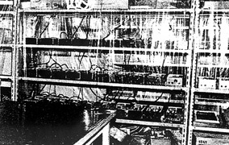
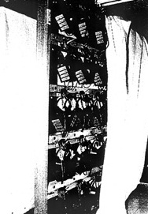
（エージングの光景）1階には視聴室もあったそうだ。約20畳ほどの広さにラウドスピーカーELS-8X、パワーアンプDMA-X1、CDプレイヤー「QUATTRO」などが据えてあったようだ。
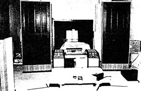
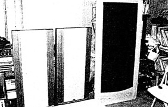
(片隅には某海外製スピーカーもあったようだ。）